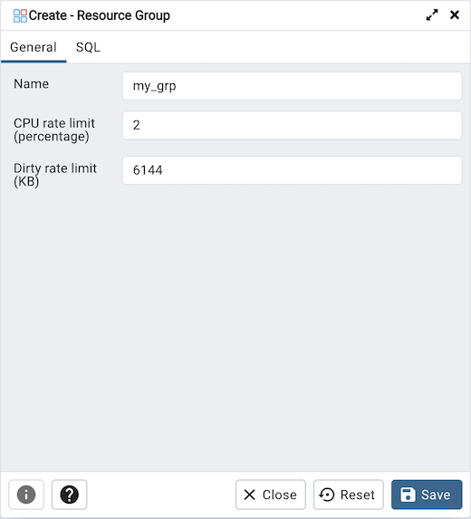
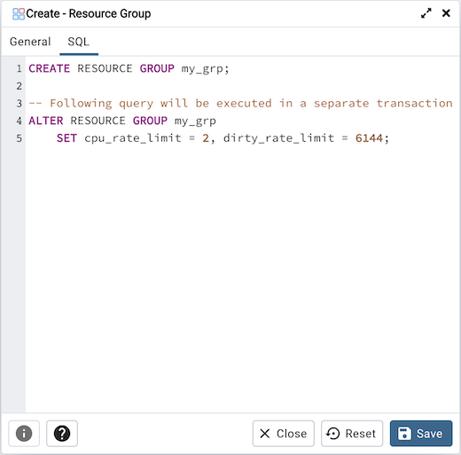

Resource Group Dialog¶
Use the Resource Group dialog to create a resource group and set values for its resources. A resource group is a named, global group on which various resource usage limits can be defined. The resource group is accessible from all databases in the cluster. To use the Resource Group dialog, you must have superuser privileges. Please note that resource groups are supported when connected to EDB Postgres Advanced Server; for more information about using resource groups, please see the EDB Postgres Advanced Server Guide, available at:
Fields used to create a resource group are located on the General tab. The SQL tab displays the SQL code generated by your selections on the Resource Group dialog.
Use the fields on the General tab to specify resource group attributes:
Use the Name field to add a descriptive name for the resource group. This name will be displayed in the tree control.
Use the CPU rate limit (%) field to set the value of the CPU rate limit resource type assigned to the resource group. The valid range for a CPU rate limit is from 0 to 1.67772e+07. The default value is 0.
Use the Dirty rate limit (KB) field to set the value of the dirty rate limit resource type assigned to the resource group. The valid range for a dirty rate limit is from 0 to 1.67772e+07. The default value is 0.
Click the SQL tab to continue.
Your entries in the Resource Group dialog generate a SQL command. Use the SQL tab for review; revisit the General tab to make any changes to the SQL command.
Example¶
The following is an example of the sql command generated by selections made in the Resource Group dialog:
The example creates a resource group named acctg that sets cpu_rate_limit to 2, and dirty_rate_limit to 6144.
Click the Info button (i) to access online SQL syntax reference material.
Click the Help button (?) to access online documentation about Resource Groups.
Click the Save button to save work.
Click the Close button to exit without saving work.
Click the Reset button to restore configuration parameters.